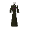

Skeleton Mage

| Config name | skeletonmage |
| NPC id | 94 |
| Combat level | 16 |
| Hitpoints | 17 |
| Attack / Strength / Defence | 14 / 14 / 14 |
| Respawn | 50 ticks |
| Options | Attack |
| Wander range | 5 tiles from spawn |
| Max range | 7 tiles from spawn |
| Defined in | scripts/_unpack/225/all.npc |
Skeleton Mage
An undead worker of dark magic.
Show all 4 spawns on the world map → Open in knowledge graph →
Drops
No drops recorded.
Locations
| Area | Coordinates | Level | Count | Map |
|---|---|---|---|---|
| Coal Trucks (underground) | 2585, 9878 | 0 | 1 | view |
| Coal Trucks (underground) | 2588, 9880 | 0 | 1 | view |
| Coal Trucks (underground) | 2590, 9882 | 0 | 1 | view |
| Coal Trucks (underground) | 2592, 9884 | 0 | 1 | view |
Referenced in scripts
scripts/npc/scripts/skeleton_mage.rs2